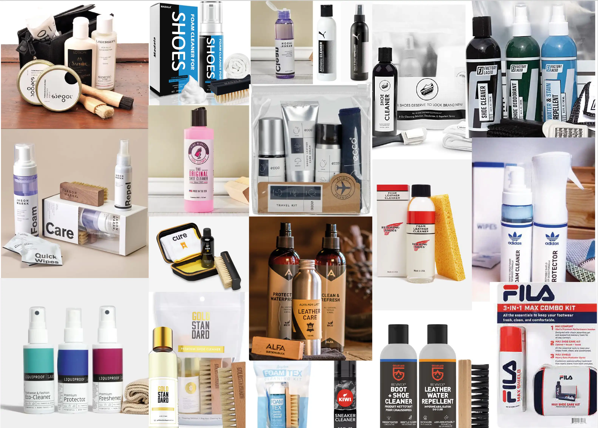

Emballasjedesign
Converse skopleie
Skoleprosjekt
Denne fiktive oppgaven gikk ut på å designe fire skopleieprodukter for Converse. Produktene måtte ha ulike proporsjoner og areal for å vise designprinsippene i sin fulle bredde, og relatere seg til verdiene til Converse.
Underveis i oppgaven hentet jeg inspirasjon fra Converse sitt varemerke og deres sosiale medier. Jeg endte til slutt opp med en løsning som består av sterke farger og en mørk bakgrunn, som sammen skaper en fin kontrast.
Verktøy: Illustrator, InDesign & Dimension
Innsiktsarbeid
Converse er en veldig populær merkevare som de aller fleste kjenner til. De fokuserer veldig på kreativitet, individualitet og det å kunne uttrykke seg selv slik man selv ønsker. De har en veldig sterk identitet som gjenspeiler fokuset deres godt, og som gjør at mange føler en sterk tilknytning til både merkevaren og produktene deres.
Konkurrentanalyse
Før jeg startet på designprosessen utførte jeg en kjapp konkurrentanalyse. Noen av konkurrenten har et ganske enkelt og rent uttrykk, samtidig som de bruker farger noe som gir mer liv til produktene, mens andre virker litt rotete og kanskje litt utdaterte visuelt sett.
Målet mitt er å lage et produkt som skiller seg ut og som virker mer spennende enn konkurrentene. I tillegg burde designet ha en mer moderne stil, for å få flere unge til å ville kjøpe produktene.
Designprosess - Eske
Designprosessen min var veldig lang, og besto for det meste av å teste ut ulike ting på «Shoe Cleaner» boksen, før designet ble overført til de tre andre boksene.
Eske mal
Jeg brukte nettsiden Sneakerser.com for å finne ut hvilke produkter jeg skulle designe, og endte opp med «Shoe Cleaner», «Sole bonder», «Shoe wax» og «Microfiber cloth». Deretter brukte jeg målene fra nettsiden som inspirasjon, og satt opp 4 maler til eskene.
Plassering av tekst
Jeg var innom veldig mange versjoner av hvordan teksten kunne plasseres på «Shoe cleaner» esken før jeg kom fram til resultatet, men her ser dere de tre beste løsningene.
Endelig plassering av tekst
Plassering av tekst på alle esker
Deretter overførte jeg tekst oppsettet jeg endte opp med til resten av eskene.
Valg av mønster
Når teksten var satt opp gikk jeg videre til mønster. Designet med stjerner og striper er veldig typisk for Converse, men jeg ønsket å gjøre designet mitt litt mer moderne, og teste ut noe nytt. Derfor endte jeg opp med å videreutvikle versjonen med svarte firkanter.
Testing av farger
Jeg testet deretter ut ulike farger, men fant fort ut at den rosa passa best.
Plassering av farger
Deretter testet jeg ut hvordan fargene burde brukes.
Fysisk testing
Underveis i prosessen testet jeg også å printe ut designet mitt for å se hva som funker best i praksis.
Testing av effekter
Jeg følte designet mitt trengte litt flere designet, og valgte å teste ut ulike effekter fra illustrator. Til slutt endte jeg opp med effekten «Graphic pen».
Ferdigstilling
Til slutt valgte jeg også å legge til bilder og fikse litt på tekstoppsettet, før jeg overførte et lignende design til alle eskene.
Ferdige esker
Her ser dere det ferdige designet på utbretta esker.
Designprosess - Etikett
Neste del var å designe etikettene til alle produktene. Dette var en enklere prosess enn designet på eskene, men jeg var likevel innom et par idéer her også.
Produkter
Her ser dere produktene jeg skulle lage etikett for. Mikrofiber klutene hadde et veldig enkelt design hvor jeg bare la til logoen til Converse, og er derfor ikke med her.
«Cleaner solution» etikett
Jeg startet med «Cleaner solution» etiketten, og testet litt ulike ting for å få den til å passe til esken.
Ferdig etikett:
«Sole bonder» etikett
Deretter gikk jeg videre til «Sole bonder» etiketten. Prosessen her var ganske lik.
Ferdig etikett:
«Show wax» etikett
Til slutt lagde jeg «Show wax» etiketten. Her måtte jeg lage design både til lokket og selve beholderen, så designprosessen her var litt lenger, men likevel ganske lik som de to andre produktene.